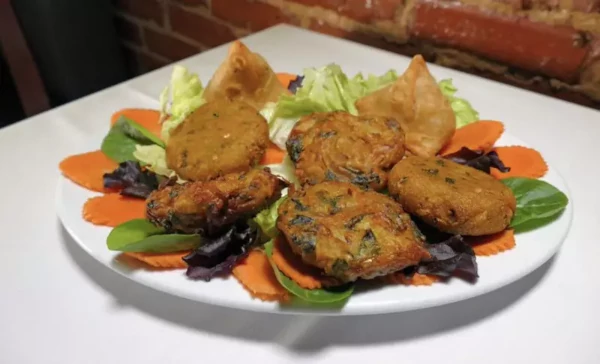

NAMASTE · WELCOME TO HAMPDEN
A taste of Nepal.
A place to feel at home.
Gather around comforting Nepali and Indian food, traditional spices, and a warm welcome at Mount Everest Restaurant & Bar.
OUR RESTAURANT
From the Himalayas
to your table.
Mount Everest brings Nepalese and Indian cooking to Baltimore’s Hampden neighborhood. Join us for a meal, take your favorites home, or bring our food to your next gathering.
Our kitchen celebrates traditional spices and the pleasure of sharing a table.
Come visit us →
FIND YOUR NEXT FAVORITE
Good food. Shared moments.
MEET THE CHEF & OWNER
Ammar Chhantyal
Chef and owner Ammar Chhantyal creates the restaurant’s menu around traditional Nepalese and Indian spices.
His culinary background spans Nepalese, North and South Indian, Italian, and American cooking. At Mount Everest, that experience comes together in a menu made for Baltimore’s community.
Discover his menuTHERE’S A SEAT FOR YOU